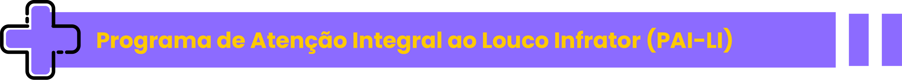

Clique nas sanfonas para conhecer
três experiências exitosas de atenção a essas mudanças mencionadas.

Programa de Atenção Integral ao Louco Infrator (PAI-LI)
243 pacientes em 77 municípios goianos.
Promove a adesão do círculo sociofamiliar do paciente judiciário, trabalhando junto à
família para estabelecimento de
vínculos para retorno ao lar e articulando com as unidades de saúde a assistência integral à
PPL.
Programa de Atenção Integral ao Paciente Judiciário
(PAI-PJ)
Programa do Tribunal de Justiça de Minas Gerais, o qual realiza acompanhamento do portador
de sofrimento mental que
cometeu algum crime.
Faz acompanhamento dos processos judiciais com indicativos de incidente de insanidade
mental, ou já sentenciados com
medida de segurança, bem como outros tipos de processo, em que a autoridade judicial julgue
importante a inclusão do
réu/sentenciado na metodologia do PAI-PJ, auxiliando o Juiz na aplicação e execução da
sentença e na promoção da
inserção social do sentenciado.
Curso de Capacitação em Saúde Mental
Curso oferecido em setembro de 2020 pelo Ministério da Justiça e Segurança Pública voltado
para saúde mental de agentes
de segurança pública.
O material programático contém os seguintes módulos: Saúde Mental e Qualidade de Vida;
Principais Conceitos da Saúde
Mental: do normal ao patológico; Riscos e Agravos da Saúde do Agente de Segurança Pública;
Principais Sintomas do
Adoecimento; O suicídio e prevenção; e Promoção e Tratamento da Saúde Mental.